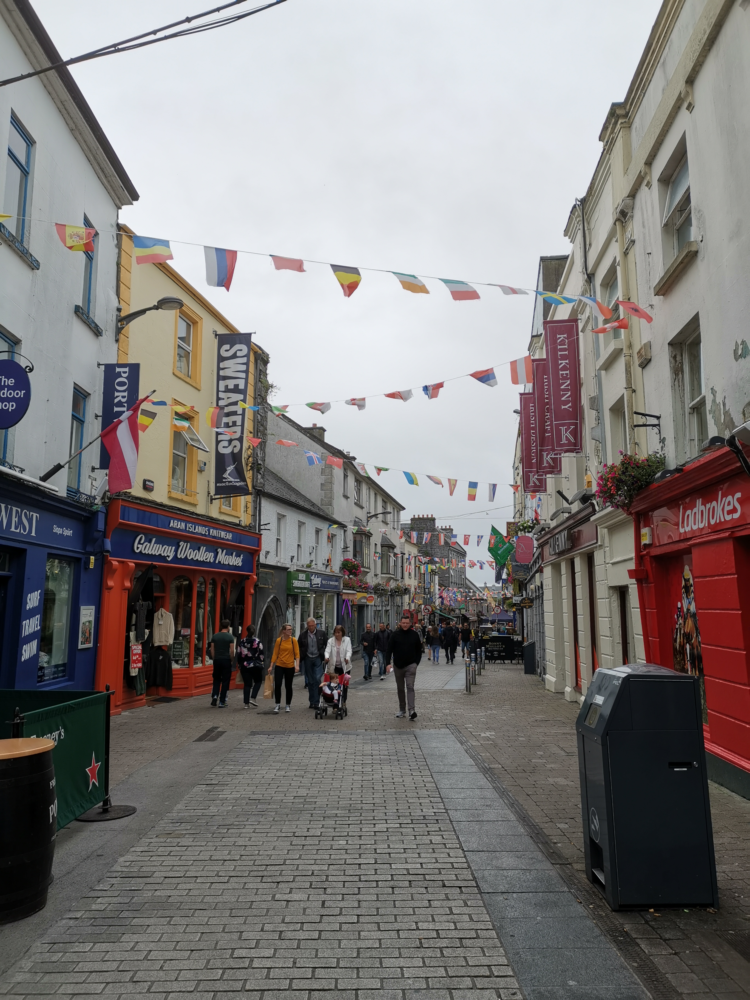

The student village. It's quite magnificent if I'm not me.
Eyre Square, where there are fourteen banners standing, each one representing one of the fourteen merchant tribes of Galway. One day, I aspire to have the banner of our House worshipped through the streets of Penang Island.
The cobblestone streets of the city centre under the sky that has cleared its fill of rain.
Every single flower here is in full bloom, their colours spreaded through the light rays of the sun and moon in their respective glory.
This picture of the twilight splitting the eye is taken during a visit to a senior's residence, where the first-years had homemade gyoza for dinner.

Those times of shopping trips and city explorations. Buskers make common appearance. I wish to one day approach random people sitting by the Long Walk and sing them a song according to their mood and atmosphere, both of which I will inquire for, then they can rate how the song changed their day from zero to two euros. It's a wonderful idea, I think.
My first night outside the laundry area during my first attempt at doing my own laundry. I remember pleading with a nearby shopkeeper if he would allow me to use the sink inside the counter. The manager, or supervisor, relented to my request, yet for the next two times of me using the laundry, I went back to my unit instead to wash my hands after putting my dirty laundry into the machine before running back to the washing machine area. I detest this routine, which will no doubt repeat for many counts during my stay in Galway. I need my own washing machine next year, and a way for that to happen will find me.
This was before my first jog in Galway. It was a tiring jog, through light rain, to Eyre Square, where we decided not to jog back, and so it was the bus for us. It was a very wet morning.

Before one of my choir practices, I think. It was a splendid evening, like Mondays usually are for me here.